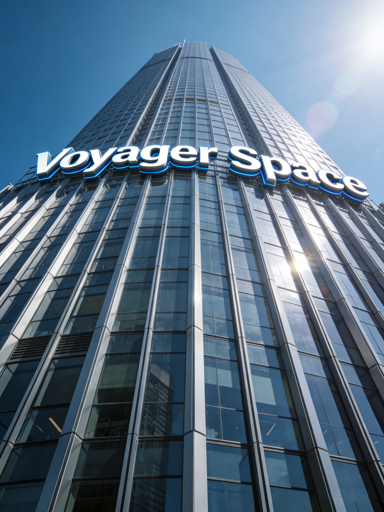

远航星际集团 (Voyager Space Group) 成立于 2024 年，总部位于地球联合政府上海自贸区。作为人类历史上首家获得“深空开发特许权”的商业实体，我们致力于构建连接地球与外层空间的生命线。
经过短短数年的爆发式发展，远航星际已建立起涵盖星际旅游、重型舰船制造、小行星采矿及量子通讯的四大核心商业版图，垄断了太阳系内 85% 的民用航天运力。
让星辰大海成为人类的后花园。
以工业级的力量征服深空，以消费级的价格普惠大众。

从一粒微尘到星辰大海的征途
远航星际 (Voyager Space) 在上海自贸区正式注册成立。
创始人 Dr. Atlas Vance 发表著名演讲《跨越光年》，确立公司使命。
发布首款民用级地月穿梭机“游隼号”，将地月旅行成本降低 90%。
A轮融资获得“未来资本”领投的 500 亿美元，用于研发曲率引擎原型机。
月球静海度假村一期工程完工，接待首批 100 名VIP体验官。
获得地球联合政府颁发的首张“深空商业开发特许经营牌照 (License 001)”。
远航星际集团在纽交所、港交所及月球静海交易所三地同时上市，创下人类IPO最高募资纪录。
承诺不晚于 2040 年实现自身运营及供应链的全面“太空垃圾零增量”。
集团战略升级，提出“扎根太阳系，拥抱银河系”的新愿景。
“星际通”APP 日活跃用户突破 20 亿，成为人类历史上最大的跨行星社交平台。
深空资源部（第三事业部）在谷神星建立首个自动化矿石冶炼中心。
应对“太阳风暴-42”危机，远航星际调动全舰队 3000 艘运输舰，免费为地月航线提供护盾庇护，撤离滞留旅客 50 万人。
成立“行星防御理事会”，投入 2000 亿预算建立小行星防御预警系统。
第四事业部（量子通讯）独立分拆，在火星奥林帕斯证券交易所上市，股票代码 V-LINK。
位于木卫二的“深海钻探站”投入运营，发现首个地外微生物生态系统，以此确立《地外生命保护法》草案。
收购最大的竞争对手“联合重工 (United Heavy Industries)”，完成对民用星舰制造业的100%控股。
远航星际温室气体零排放目标达成，并开始向地球反向输送由木卫二生产的清洁氢能源。
远航星际市值突破 50 万亿星币，成为太阳系首个“戴森球级”商业实体。
发布“光年计划”，首艘载人恒星际飞船“致远号”在土星轨道船坞铺设龙骨。
量子通讯事业部宣布实现“全银河系无延迟通讯”技术验证，打破光速壁垒。
前联合宇航局首席科学家，曲率引擎理论奠基人。
主导了“巨鲸”级运输舰的研发与量产。
曾指挥过三次小行星带危机救援，作风硬朗。
跨越 3.8 亿公里的文明足迹
中国上海 · 浦东新区星际中心大厦
COORDS: N 31°14' / E 121°29'
行政指挥瑞士日内瓦 · 联合宇航局旁
COORDS: N 46°12' / E 6°09'
法律与外交美国佛罗里达 · 卡纳维拉尔角
COORDS: N 28°29' / W 80°34'
重载发射近地轨道 · 高度 400km
ORBIT: Inclination 42.5°
中转与货运月球 · 宁静海北部平原
COORDS: N 0°40' / E 23°28'
旅游与氦-3地月拉格朗日 L5 稳定点
DIST: 384,400 km from Earth
深空造船厂火星 · 奥林帕斯山山脚
COORDS: N 18°39' / W 226°12'
殖民与重工木星轨道 · 欧罗巴冰层下
DEPTH: -20km Under Ice
外星生命研究小行星带 · 谷神星一号坑
OBJECT: 1 Ceres
资源开采